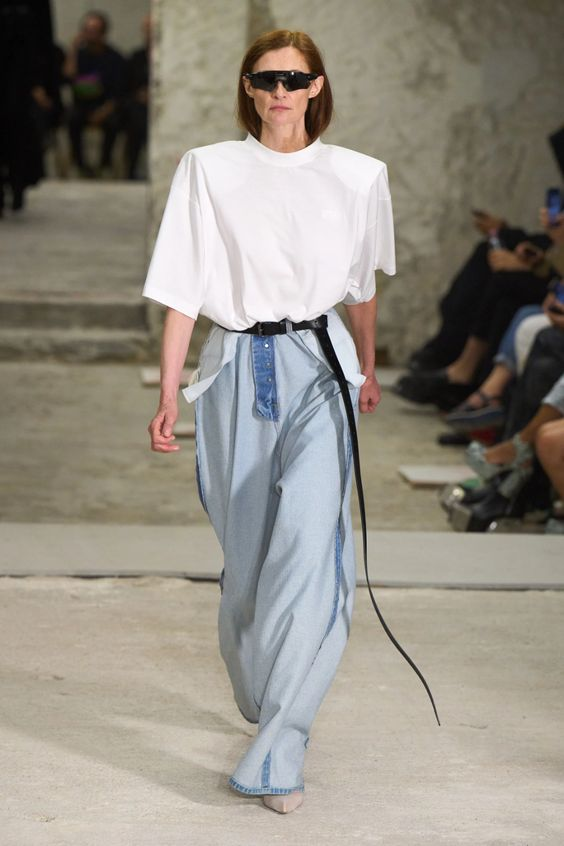
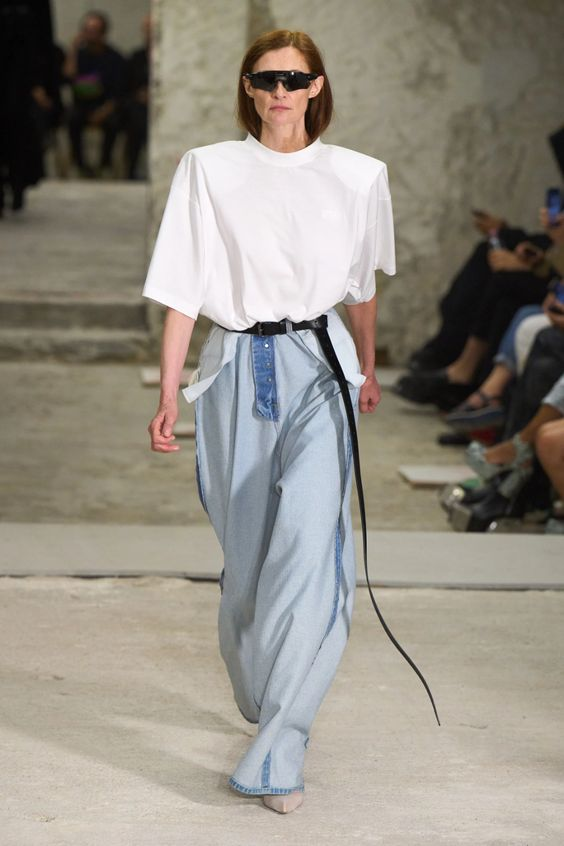

The Denim Bag: A Fashion Essential for Every Wardrobe
Denim's durability is legendary, and it's this rugged quality that has made it a favorite among bag designers and wearers alike. Denim bags are built to withstand the test of time, ensuring that they remain a reliable and long-lasting addition to your accessory collection. The denim bag, a stylish and versatile accessory, has earned its place as a timeless fashion essential. It represents the marriage of durability, casual coolness, and effortless style, making it a must-have item for individuals seeking both fashion and functionality in their accessories. Let's explore why the denim bag has become a staple in fashion, and how it continues to evolve and capture the hearts of fashion enthusiasts worldwide.